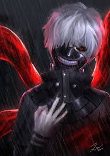

Tokyo Ghoul (Japanese: 東京喰種トーキョーグール Hepburn: Tōkyō Gūru) is a Japanese dark fantasy manga series written and illustrated by Sui Ishida. It was serialized in Shueisha's seinen manga magazine Weekly Young Jump between September 2011 and September 2014 and has been collected in fourteen tankōbon volumes as of August 2014. A sequel titled Tokyo Ghoul:re began serialization in the same magazine in October 2014 and a prequel titled Tokyo Ghoul [Jack] ran online on Jump Live.